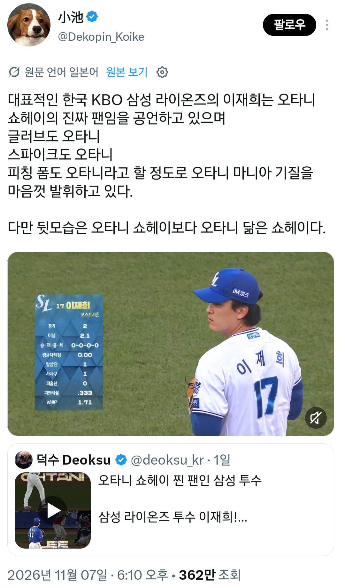
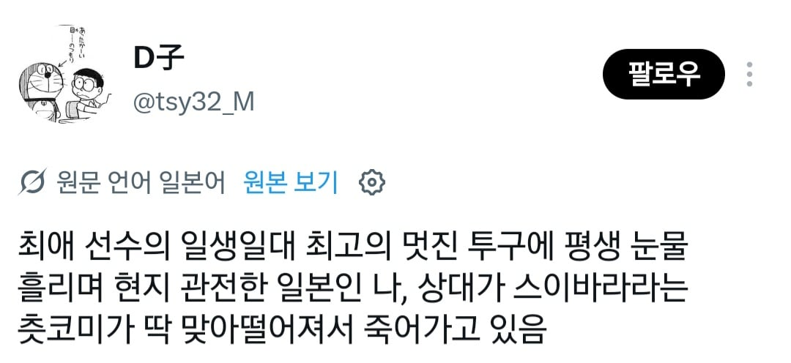
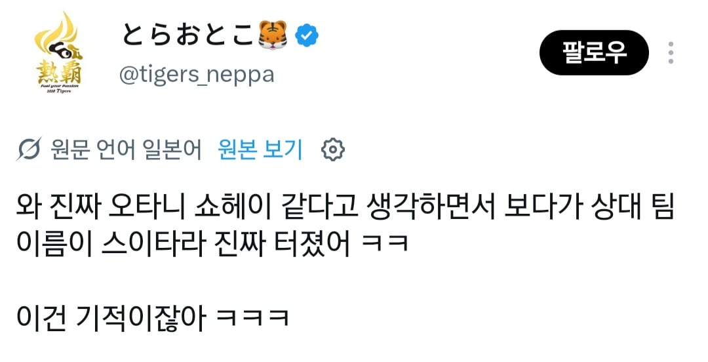
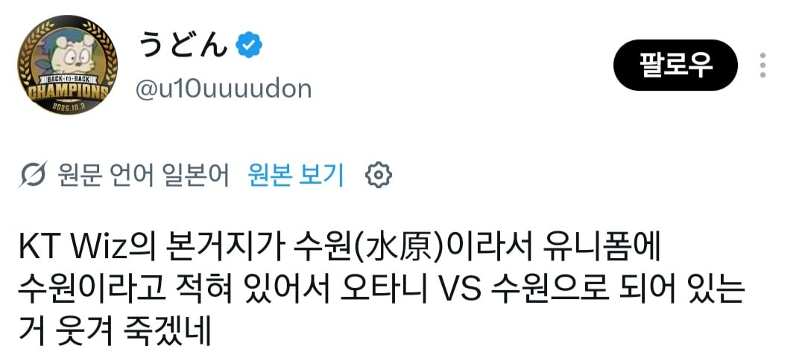
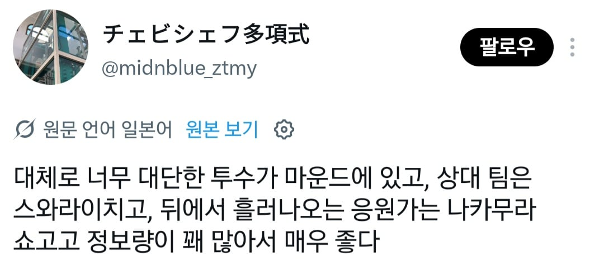
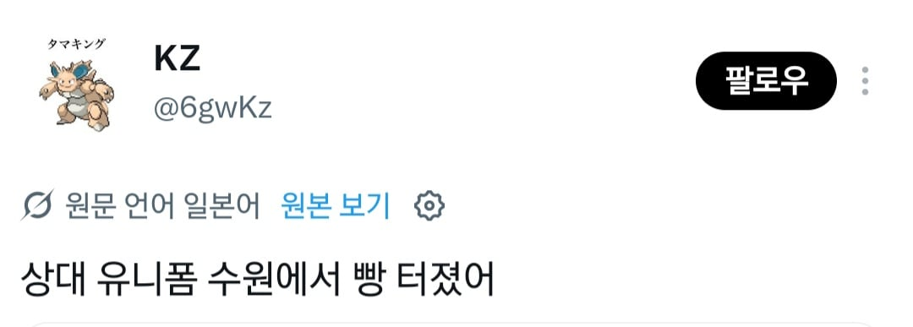
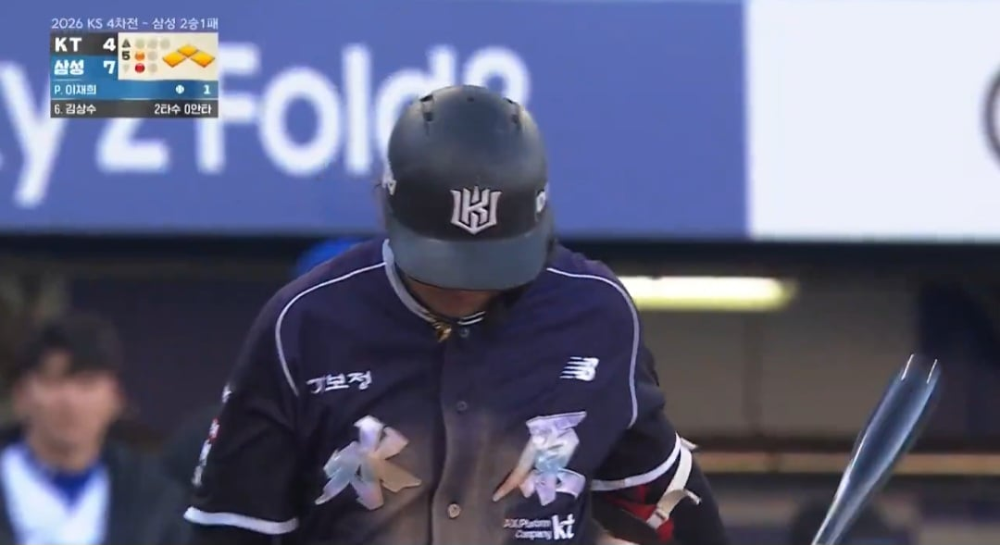
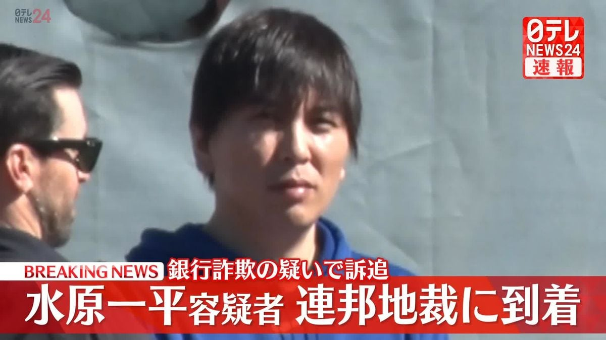

어제 코시 4차전에서 사토시가 방화로 신나게 불질러놓은걸 수습한 이재희
선수 본인이 오타니 광팬인것도 있긴했지만 더 화제된게 있었는데






올해 KT는 코시에서 한자 쓰여진 정조니폼을 입고 뛰는데
(저거입고 뛴 시즌 25경기 승률이 0.870)

하필이면 저 수원시 한자가 일본에서는 미즈하라 성으로 쓰이고
돈 횡령하고 튀었던 오타니 통역사 이름이 미즈하라 잇페이(水原一平)라서 일본인 입장에선 웃겨죽는 상황이 되버림
심지어 오타니랑 같은 투구폼으로 던지다 같은 부위까지 부위까지 부상당하고, 부상기간에는 오타니 영상 찾아보며 이악물고 재활한... 그저 오타니 사랑해 청년